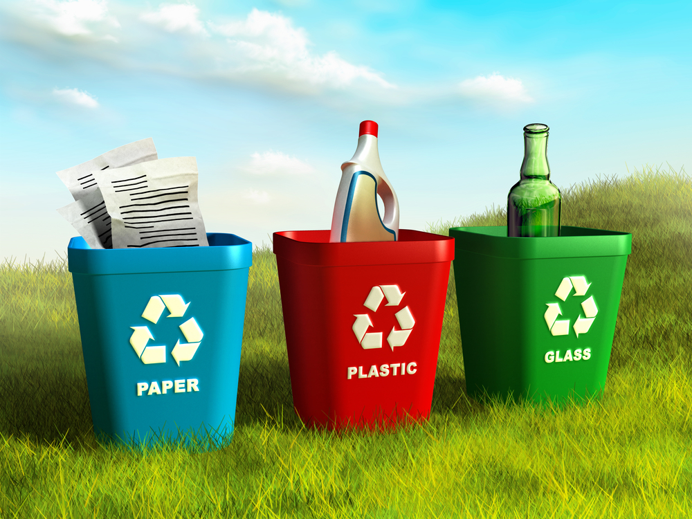
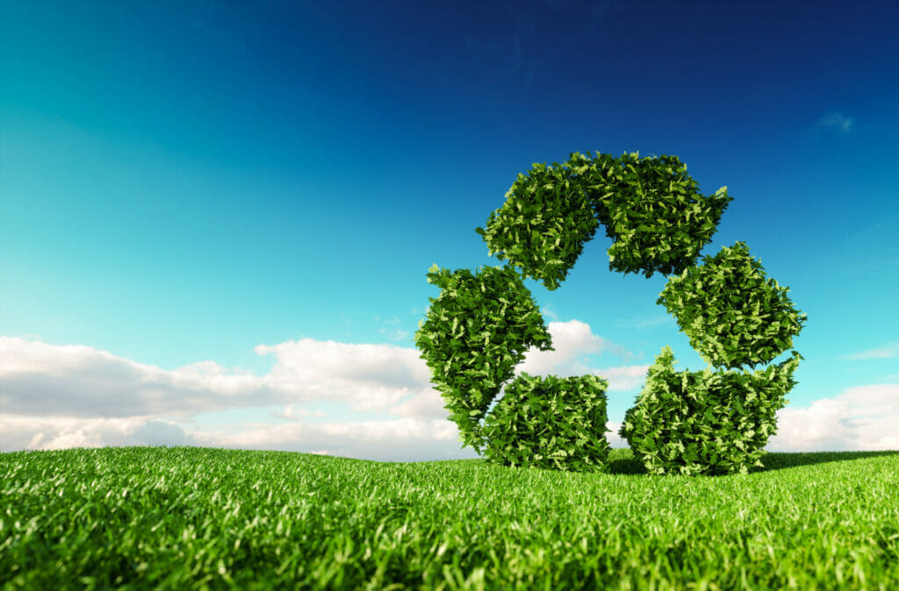

Recycling is the process of collecting, sorting, cleaning, and processing used materials into new products instead of throwing them away.

It is also a part of the 3Rs (Reduce, Reuse, Recycle) which is a waste management strategy that aims to minimize the amount of waste generated and promote sustainable practices.
The recycling process usually happens in a few stages.
First, items are collected from homes, schools, and businesses, often recycling bins or drop-off centres.
Next, it's transported to a materials recovery facility, where machines and workers sort everything by type: paper, plastic, glass, and metal are separated so they can be processed correctly.
The sorted materials are then cleaned, shredded or melted down, and turned into raw material that manufacturers can use to make brand new products.
Items that are heavily contaminated with food, often cannot be recycled through standard programs and end up in landfill even when placed in the recycling bin.
That's why cleaning items before recycling makes such a big difference.
Why Recycle
Why you should recycle?
You should recycle as it helps conserve our ever-depleting natural resources, reduces the amount of waste produced, and reduces greenhouse gases.

Beyond the basics, recycling has a ripple effect across the environment, the economy, and our communities.
Manufacturing goods from recycled materials generally uses far less energy than starting from raw resources.
Recycling also keeps waste out of landfills, which extends the life of existing landfill sites and reduces the need to open new ones.
There are economic and social benefits too. The recycling industry creates jobs in collection, sorting, and manufacturing, and recycled materials are often cheaper for companies to use than virgin resources.
How to Start
Getting started is easy but continuing to recycle is the hard part.
However, here are some tips to help you get started and continue recycling.
Set up separate bins for common categories such as paper and plastic, as those are the most commonly found in one-time-use items.
Make sure to clean the items before recycling them, as dirty items can contaminate the recycling process.
Reduce first, reuse second, and recycle last, as recycling still uses energy and resources.
Recognize what can and cannot be recycled by remembering the picture on the recycling bin.
Flatten cardboard boxes and crush plastic bottles where possible to save space in your bin and make collection more efficient.
Keep a small list or chart near your bins for the first few weeks, until sorting recyclables becomes second nature.
Get the rest of your household or workplace involved, since recycling works best as a shared habit rather than a solo effort.
Try It Yourself: Sort the Recycling
Drag each item into the bin it belongs in.
Score: 0
Attempts: 0
Time: 00:00
🎉 Nice sorting! You got everything in the right bin.